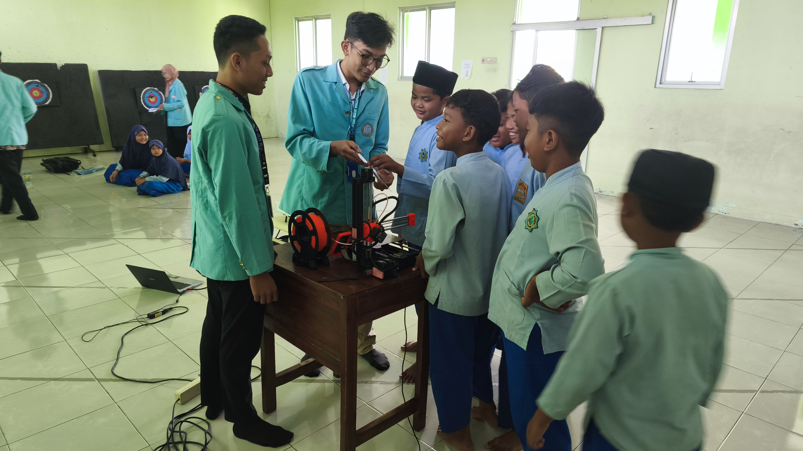
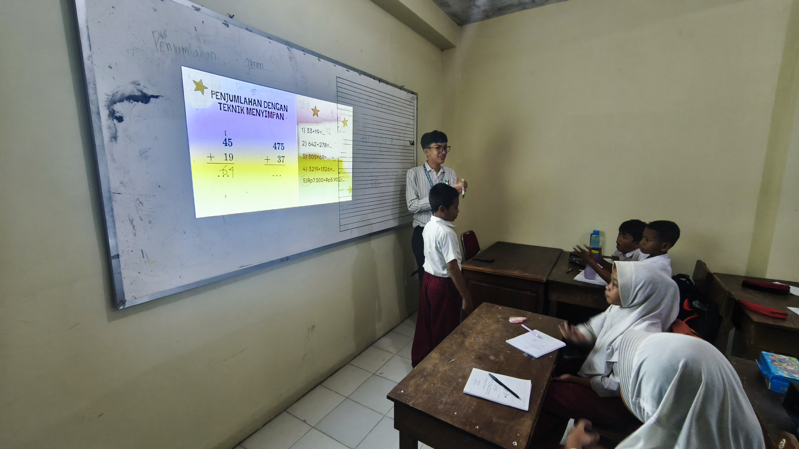
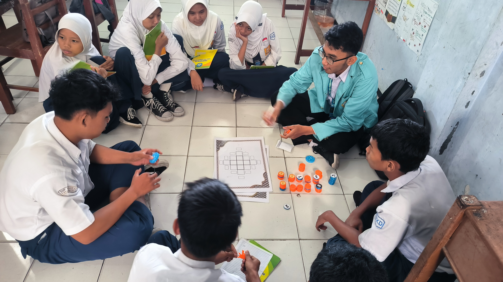

SDIT Luqman Al-Hakim
Isi laporan dari kegiatan riset di SDIT Luqman Al-Hakim
📄 Unduh Laporan PDFSD Muhammadiyah 21 Baluwarti
Isi laporan dari kegiatan riset di SD Muhammadiyah 21 Baluwarti
📄 Unduh Laporan PDFSMPN 4 Karanganyar
Isi laporan dari kegiatan riset di SMPN 4 Karanganyar
📄 Unduh Laporan PDFGaleri Kegiatan



Timeline Kegiatan
- Februari-Maret 2025: Persiapan, Koordinasi ke Sekolah, dan Pembuatan Media 3D-Print
- April-Mei 2025: Implementasi dimulai
- Juni 2025: Evaluasi dan dokumentasi
- Juli 2025: Penyusunan laporan akhir